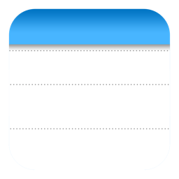

Download JoltNotes
Get JoltNotes for your operating system today!
Note: macOS users may need to grant permission in System Settings > Privacy & Security due to Gatekeeper. See our installation guide for details.
Looking for previous versions, source code, or Intel Mac builds? Visit our GitHub Releases page.
JoltNotes
